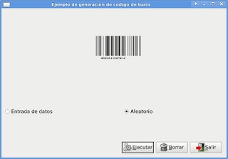

Desarrollo de aplicaciones gráficas con python+gtk+glade. Parte 10. Generador de código de barra
Posted on sáb 02 enero 2010 in Tutorial Python • 3 min read
En este artículo se explicará como usar los botones de radio y manejar imágenes. El programa es un generador de códigos de barra.
Python tiene un módulo para crear imágenes svg con código de barra, Este módulo se llama pyBarcode; para poder instalar este módulo se requiere python2.6 y en el equipo por defecto python2.5. Se instaló la versión 2.6 y se compilo pyBarcode con esta versión. Por esa razón se creo un script para generar el código de barras que usa python 2.6 y el programa gráfico usa python2.5.
En el programa gráfico se le puede pasar un número de 12 dígitos para generar un código de barras o generar el código de forma aleatoria.
El diseño gráfico de la aplicación se muestra en la siguiente figura:

El código del script que genera el código de Barras es el siguiente:
#!/opt/python/bin/python2.6
# -*- coding: utf-8 -*-
#Importar barcode y sys
import barcode,sys
#Funcion generar codigo se le pasa el numero para generar el codigo
def generar_codigo(dato):
#Se usara EAN13
EAN = barcode.get_barcode('ean13')
ean = EAN(u'%s' %dato)
#Se salva el archivo en formato svg
fullname = ean.save('ean13_barcode')
fullname
if __name__ == "__main__":
#se importa el modulo commands
import commands
#Se borra el archivo anterior
commands.getstatusoutput("rm ean13_barcode.svg")
#Se toma el argumento para generar el codigo
dato =sys.argv[1]
#Se ejecuta la funcion
generar_codigo(dato)
El código de la aplicación gráfica es el siguiente:
#!/usr/bin/env python
# -*- coding: utf-8 -*-
#Importar modulo gtk,commands y random
import gtk, commands, random
class App:
def __init__(self):
#Manejo del archivo glade por medio de gtkbuilder
self.glade_file = "ej13.ui"
self.glade = gtk.Builder()
self.glade.add_from_file(self.glade_file)
# cargar los widgets de la interfaz
self.window = self.glade.get_object('dialog1')
self.button1 = self.glade.get_object('button1')
self.button2 = self.glade.get_object('button2')
self.button3 = self.glade.get_object('button3')
self.radiobutton1 = self.glade.get_object('radiobutton1')
self.radiobutton2 = self.glade.get_object('radiobutton2')
self.entrada = self.glade.get_object('entry1')
self.imagen = self.glade.get_object('image1')
#Valores iniciales de la aplicacion Titulo y tama?o de la ventana
self.window.set_title("Ejemplo de generacion de codigo de barra")
self.window.set_default_size(600, 400)
#Asociar los eventos de los 2 botones y de la ventana
self.window.connect("close",self.__on_dialog1_close)
self.window.connect("destroy",self.__on_dialog1_destroy)
self.button1.connect ("clicked",self.__on_button1_clicked)
self.button2.connect ("clicked",self.__on_button2_clicked)
self.button3.connect ("clicked",self.__on_button3_clicked)
self.radiobutton1.connect("toggled",self.__on_radiobutton1_toggled)
self.radiobutton2.connect("toggled",self.__on_radiobutton2_toggled)
#Se muestra todos los widgets
self.window.show_all()
def __on_radiobutton1_toggled(self,*args):
#Si este boton se selecciona se muestra la entrada de datos
self.entrada.show()
def __on_radiobutton2_toggled(self,*args):
#Si este boton se selecciona se oculta la entrada de datos
self.entrada.hide()
def __on_dialog1_close(self,*args):
#Se cierra la aplicacion
gtk.main_quit()
def __on_dialog1_destroy(self,*args):
#Se cierra la aplicacion
gtk.main_quit()
def __on_button1_clicked(self,*args):
#Creacion del codigo de barra
if self.radiobutton1.get_active() == True:
#Si el boton de radio esta activo se captura la entrada de texto
self.texto = self.entrada.get_text()
valor = int(self.texto)
elif self.radiobutton2.get_active() == True:
#Se el boton de radio esta activo se oculta la entrada de texto y se genera el numero
#de forma aleatoria
self.entrada.hide()
valor = int(random.random()*1000000000000)
#Se ejecuta el generador de codigo de barra
commands.getstatusoutput("./generador.py %s" %valor)
#Se carga la nueva imagen del codigo de barra generado
self.imagen.set_from_file('./ean13_barcode.svg')
def __on_button2_clicked(self,*args):
#El boton salir, se cierra la aplicacion
gtk.main_quit()
def __on_button3_clicked(self,*args):
#El boton se restaurar la aplicacion, se coloca una imagen en blanco
self.imagen.set_from_file('./1.png')
def main(self):
#Se inicia la aplicacion
gtk.main()
if __name__ == "__main__":
#Se crea una instancia del objeto y se ejecuta el metodo main
app = App()
app.main()
La siguiente gráfica muestra la ejecución de la aplicación:

===
¡Haz tu donativo! Si te gustó el artículo puedes realizar un donativo con Bitcoin (BTC) usando la billetera digital de tu preferencia a la siguiente dirección: 17MtNybhdkA9GV3UNS6BTwPcuhjXoPrSzV
O Escaneando el código QR desde billetera: